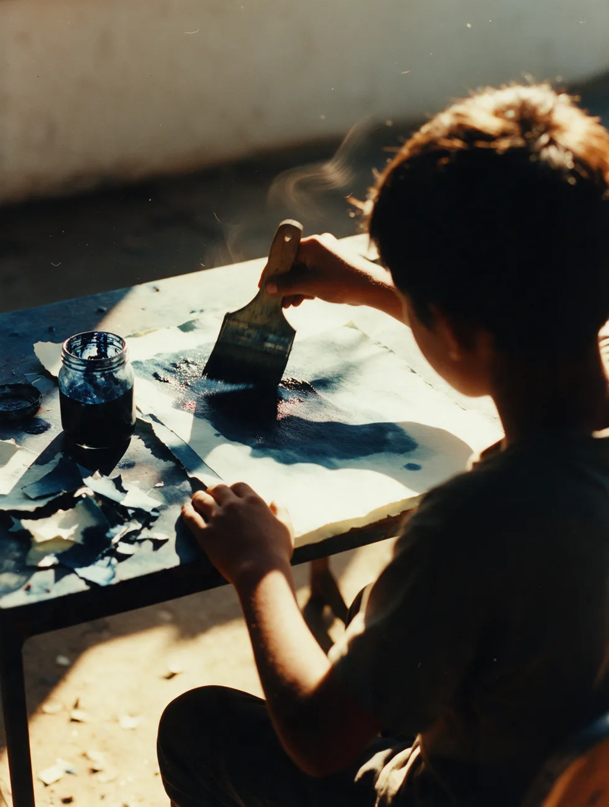
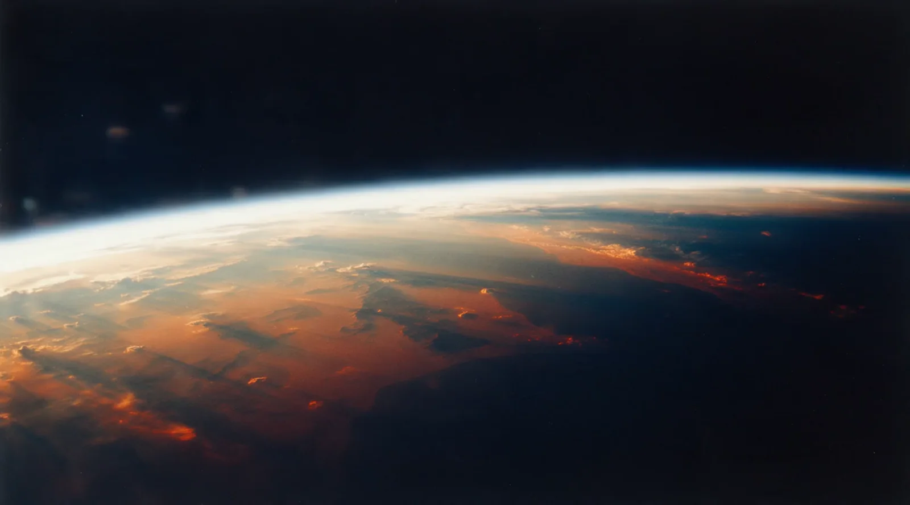
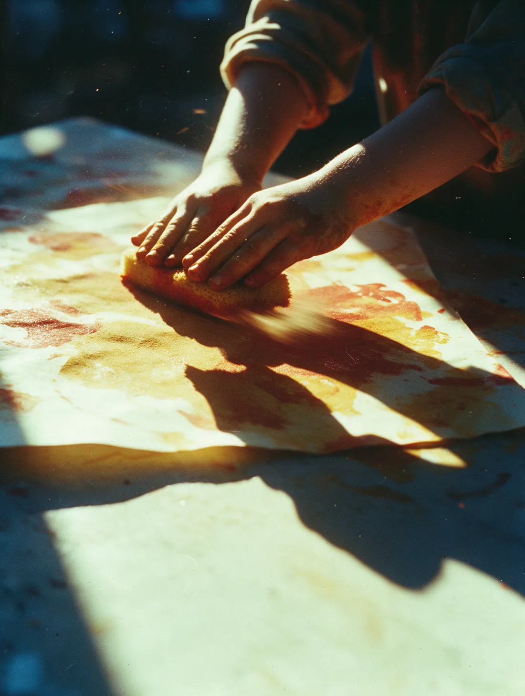
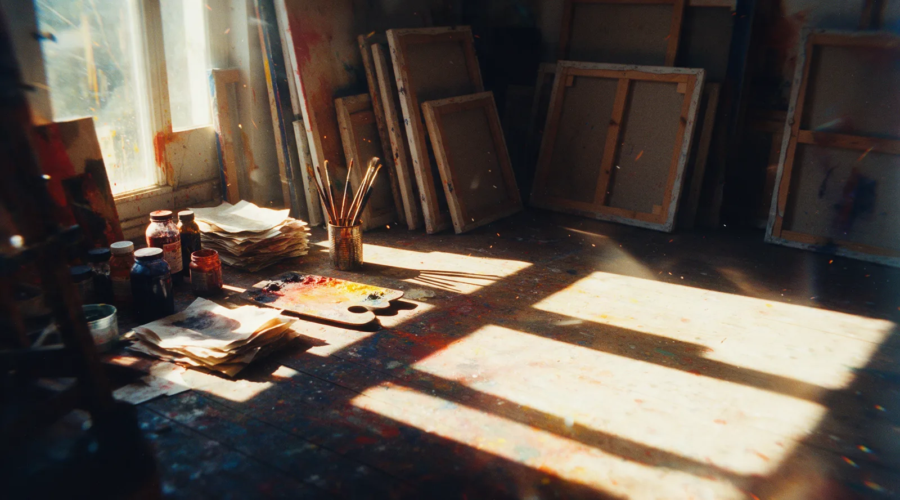
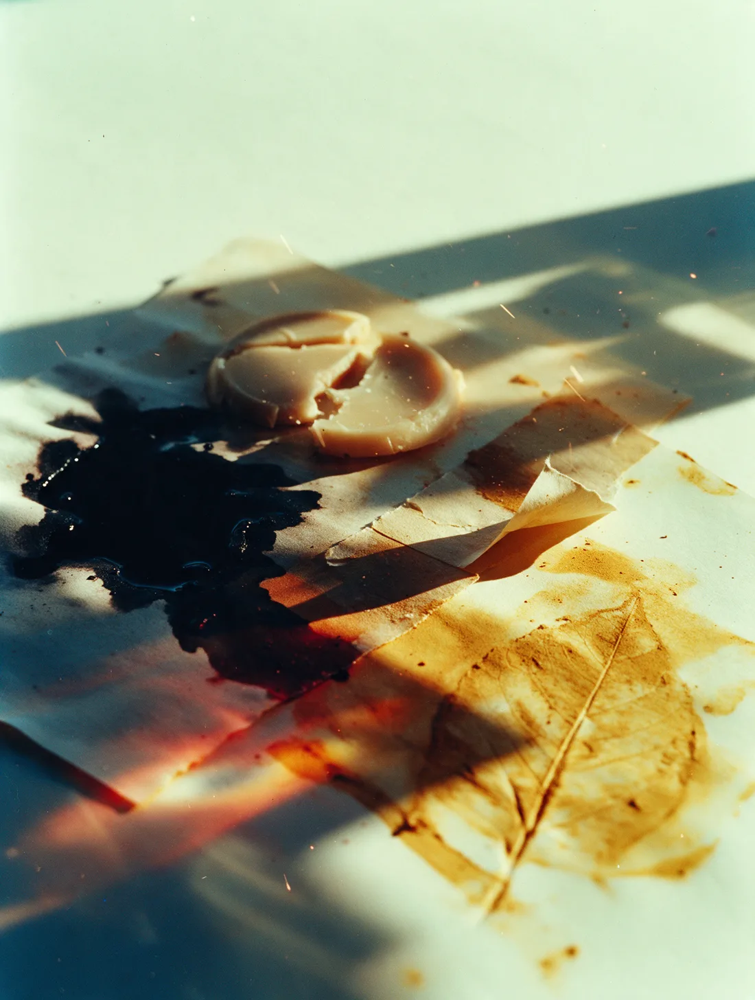
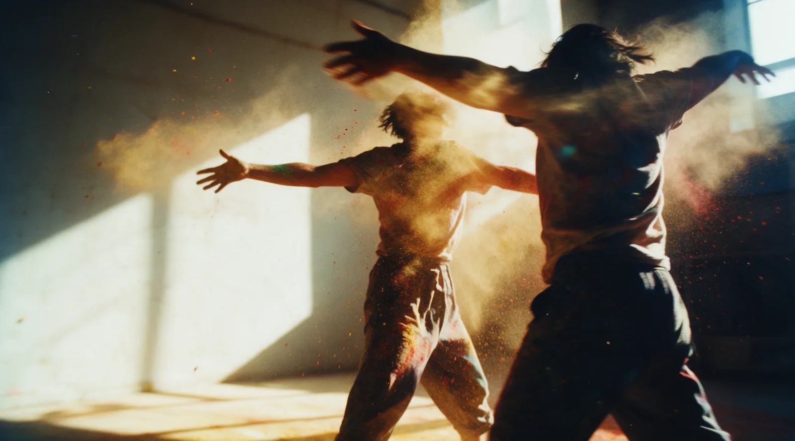
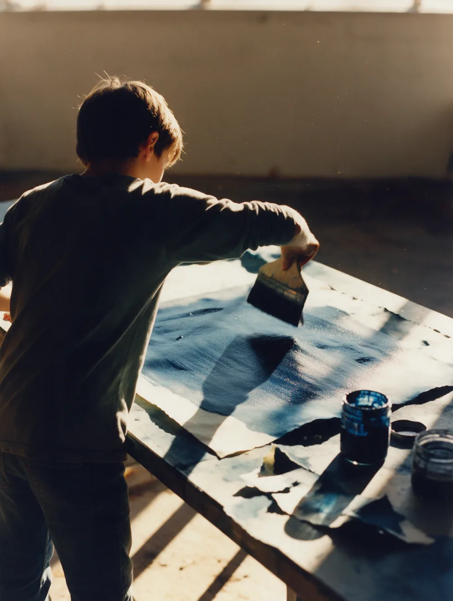
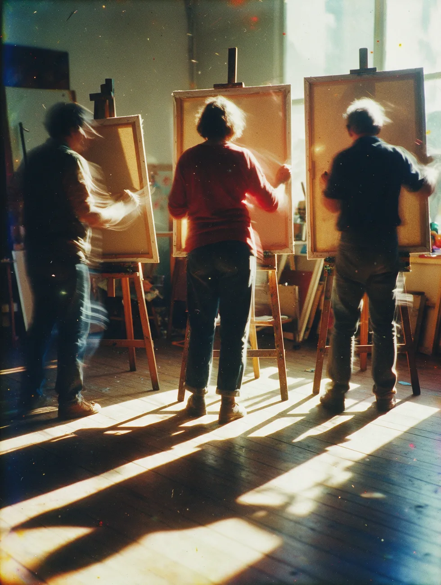
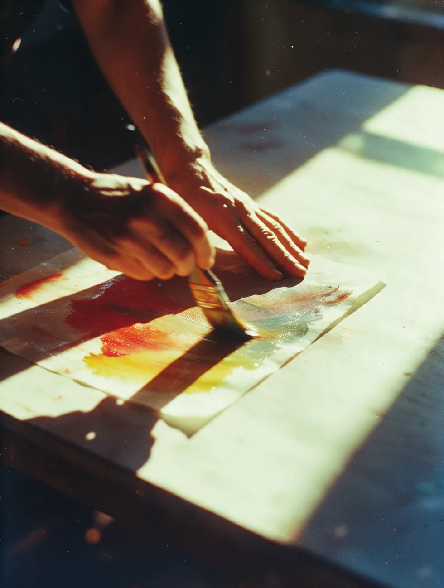

8 à 11 ans
Les enfants
On travaille grand, à plat, avec les mains autant qu'avec les outils.
Jour, horaire, tarif à compléter

Les ateliers de peinture de Muriel Oberlé. Des enfants dès 8 ans aux cours particuliers pour adultes.
Un atelier n'est pas un cours de dessin. C'est un endroit d'où l'on part, et ça tient debout à 8 ans comme à 60.
C'est la phrase que presque tout le monde dit en poussant la porte. Elle n'a jamais empêché personne de commencer.
On pose la main. On pose la couleur. Le reste s'apprend en le faisant, pas avant.


Il n'y a pas de bon geste à reproduire. Il y a le vôtre, et de quoi le trouver.
Ce qu'on a sous la main
Ce sont les matières que Muriel Oberlé mêle dans son propre travail, après avoir exploré l'huile, l'acrylique et les techniques mixtes.


« Le mouvement est souvent présent par l'entremise de ses personnages dansant et virevoltant. » La Dépêche du Midi, 8 novembre 2005
Et puis vient le moment où la couleur prend toute la place.
Muriel Oberlé puise dans ses voyages et dans son enfance en Afrique du Nord et en Afrique noire. Ses ateliers partent du même endroit : un souvenir, une matière, une couleur, et on avance.

8 à 11 ans
On travaille grand, à plat, avec les mains autant qu'avec les outils.
Jour, horaire, tarif à compléter

12 à 17 ans
L'âge où l'on veut que ça ressemble. On prend le problème à l'envers : la matière d'abord.
Jour, horaire, tarif à compléter

Adultes
Un groupe, un après-midi, et chacun sur son propre chantier. Seul, mais jamais tout seul.
Jour, horaire, tarif à compléter

Adultes
Pour reprendre après des années, ou pour aller au bout d'une seule idée.
Durée, tarif à compléter
Le parcours
Première peinture à l'huile. Avant cela, une orientation vers le commerce international.
Installation à Balma, en Haute-Garonne.
Premier atelier de peinture, animé par l'artiste peintre Eliane Fantini. Deux années d'huile, d'acrylique et de techniques mixtes.
Premier prix du 8e Salon d'automne de la ville de Saint-Alban, pour Les Enfants à la mer.
Deuxième prix du jury du Salon des arts de la ville de Balma, pour Promenade exotique, une œuvre mêlant collage, encre et bougies.
Faits et citation : « Muriel Oberlé : les voyages forment la genèse », La Dépêche du Midi, 8 novembre 2005. Sa grand-mère et plusieurs de ses tantes étaient artistes ; c'est à leur contact qu'elle a développé son sens de la couleur et des nuances.
Dites-moi l'âge et ce que vous avez envie d'essayer. Vous recevrez les créneaux disponibles en réponse.